In this section, we will explore the methods you can use to discover the underlying algorithmic patterns that define mountain, chainmail, and fish-scale armor. While the ultimate source is consulting with real-world artisans to understand their traditional construction logic, our goal is to "translate" their methods into the language of classrooms and computers.
We'll begin by focusing on two basic principles: first, identify the repeating units that form the smallest structural block; and second, determine how those repeating units are transformed (using concepts like rotation, dilation, translation, or reflection) to cover a large surface. After establishing these fundamental principles, you can then proceed to examine each armor pattern individually.
Click on any image to enlarge and view details
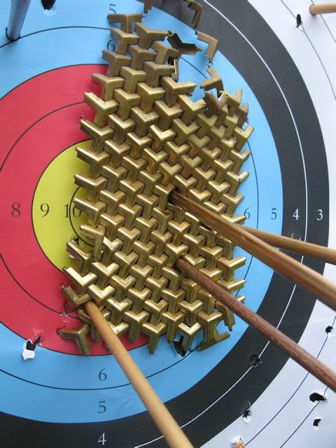
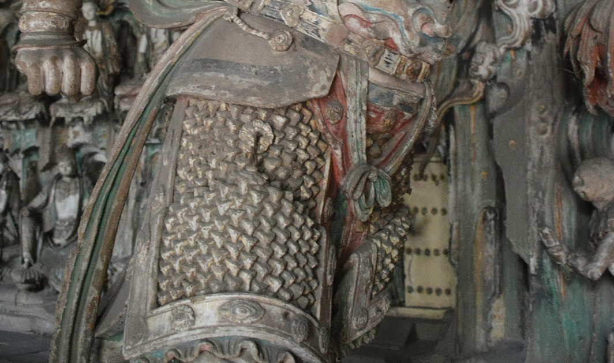
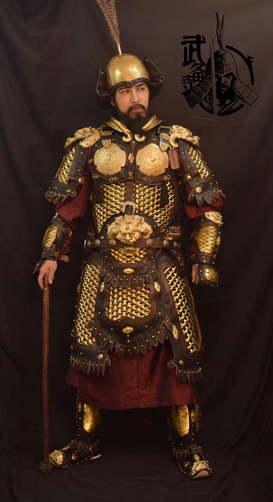
Sources: Great Ming Military | Reddit Arms & Armor
1. Origins
The Chinese Mountain Pattern armor, or shan wen jia (山文甲), is a type of armor frequently depicted in historical Chinese art, from paintings to statues. It is named for its distinctive, intricate pattern of smaller, interlocking plates that resemble the Chinese character for "mountain" (shān, 山). While it was likely worn by high-ranking officers from the Tang through the Ming dynasties and is often combined with mirror armor to create "shining armor" (míngguāngjiǎ), the true nature of shan wen jia is a subject of scholarly debate due to a lack of surviving archaeological examples.
Historians remain divided on whether the mountain pattern armor was a functional combat armor or a highly stylized artistic convention. One theory suggests it was a practical and flexible form of armor made from numerous metal plates woven onto a backing, offering protection while distributing impact force. However, others argue that its appearance in art may have been a stylized representation of more conventional armor, such as lamellar or mail. Modern attempts at reconstruction have not conclusively settled the debate, leaving the exact construction and efficacy of the mountain pattern armor a mystery.
Read More
A small archive of articles and videos on the historical debate, visual traces, and material interpretation of Shanwen Armor.
- 01 The myth of Shan Wen Jia
- 02 A Brief Discussion on the Patterns and Traces of the Shanwenjia Motif
- 03 Did the Chinese Warrior “Shanwen Armor” Widely Depicted in Murals Actually Exist?
- 04 A Study on the Form of the Mountain-Patterned Armor
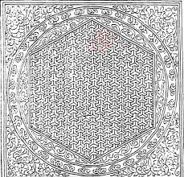
2. Modern Usage
Although Mountain Armor (山纹甲) originated as a protective system in historical China, today it is more influential as a visual and structural motif than as actual armor. Because the original armor is primarily known through paintings and sculptures rather than surviving artifacts, the pattern has been widely reinterpreted in modern design.
Films, Games and Digital Media
Mountain armor patterns frequently appear in historical films, fantasy media, and video games, where they are used to represent strength, discipline, and elite warriors. Designers adapt the repeating “mountain-shaped” units into stylized armor textures, often exaggerating the geometric structure to create a more visually striking and readable design.
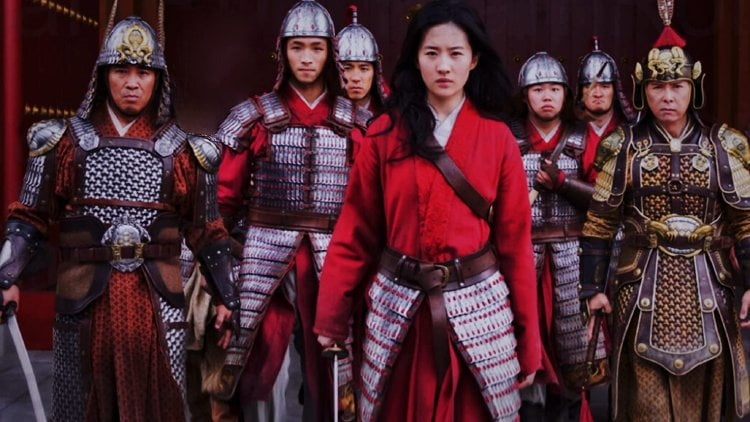
Screenshot of film Mulan (2020) from Disney
Armor costume from digital game Where Winds Meet
Fashion Product and Industrial Design
In modern fashion and costume design, the pattern is reinterpreted as layered, interlocking geometric surfaces. Designers use it in textiles, stage costumes, and wearable art to evoke protection and structure, often translating the rigid armor logic into flexible materials such as fabric, leather, or 3D-printed elements.
The interlocking structure of mountain armor has inspired modular and protective design systems. Its logic (small repeating units forming a flexible but strong surface) can be seen in products such as protective gear, packaging structures, and even architectural facades that emphasize both strength and adaptability.
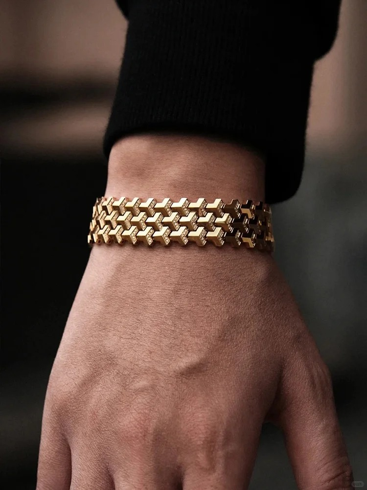
A modern usage of the mountain pattern translated into jewelry design.
3. Math & Geometry
The Mountain Armor pattern is a highly structured, interlocking system originally designed for protection. Unlike more decorative motifs, its geometry emphasizes connection, stability, and repetition, making it especially useful for understanding how local units form strong global structures.
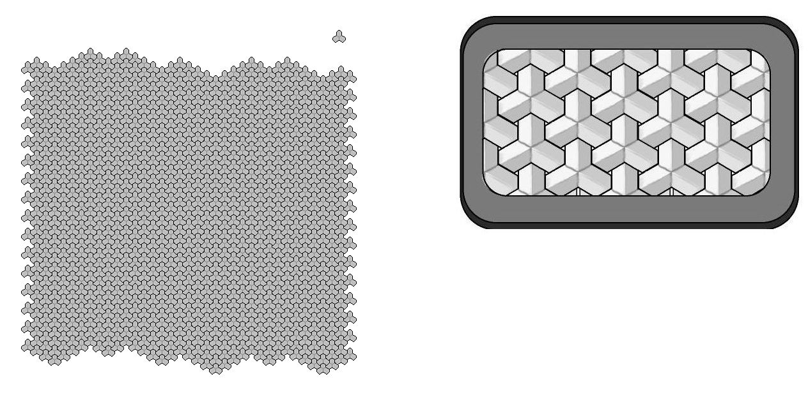
Let’s look at this complete mountain pattern armor piece.
1. Identify the Base Unit
The Mountain Armor pattern is built from a repeating geometric unit. At its core, each unit can be understood as a combination of three connected hexagons, forming a Chinese character “山” (shan) mountain-like shape. By identifying this base unit, you will practice decomposition, breaking a complex structure into repeatable components.
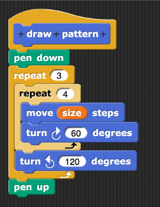
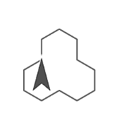
2. Geometry and Symmetry
The structure relies on hexagonal geometry, where each unit connects edge-to-edge with others. This allows the pattern to tile without gaps. Key geometric ideas include:
- Tessellation: hexagons fill space completely
- Symmetry: units repeat through rotation and translation
- Alignment: consistent angles and edges maintain the structure
(Coordinates and line construction follow the same principles introduced in the Ruyi Cloud section.)
3. Pattern Formation
The full pattern is formed by repeating and interlocking the base unit. Each unit connects to its neighbors, creating a flexible but stable system.
4. Software Representation
Mountain Armor 02
Feel free to explore another format: The reverse pattern.
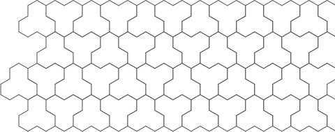
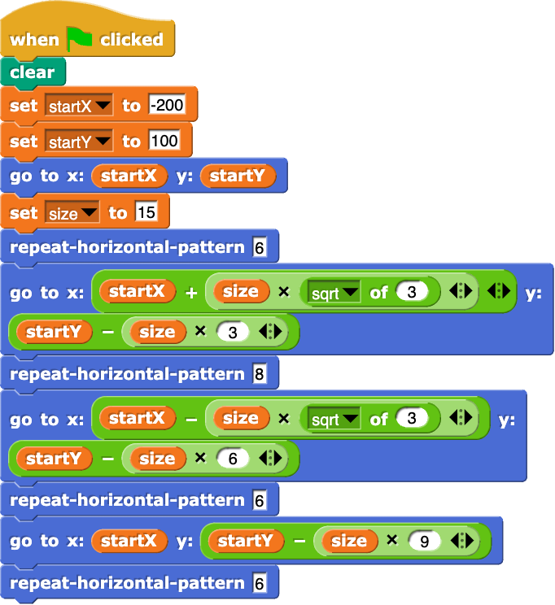